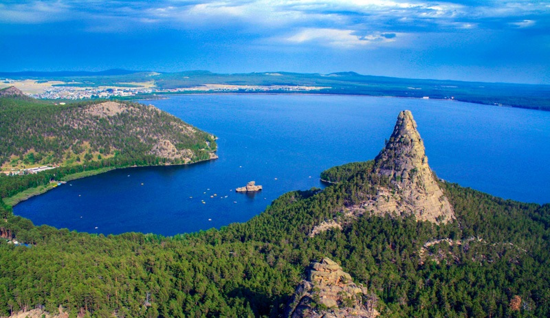

General information
Kokshetau (Kazakh: Көкшетау, romanized: Kökşetau; [kɵkʂʲetɑw] lit. 'Blueish Mountain/Smoky-Blue Mountain'; Russian: Кокшета́у, IPA: [kəkʂɛtaʊ]),
formerly known as Kokchetav (Russian: Кокчета́в, [kəktɕʲetav]; the official name between 1868–1993) is a city in northern Kazakhstan and the capital of Akmola Region
Administrative districts
Bukpa
Kokshe
Bostandyk
Sary-Arka
Beybitshilik
Aul
Zhaylau
What to do in Kokshetau?
Visit Zhumbaktas by boat
Reach the top of Okzhetpes
Hike in the pine woods
Visit SPA and other relaxing facilities
Check out Abylaikhan's original throne
Learn cultural heritage of Kazakhs in museums
Multiple on-water activities
Gallery
